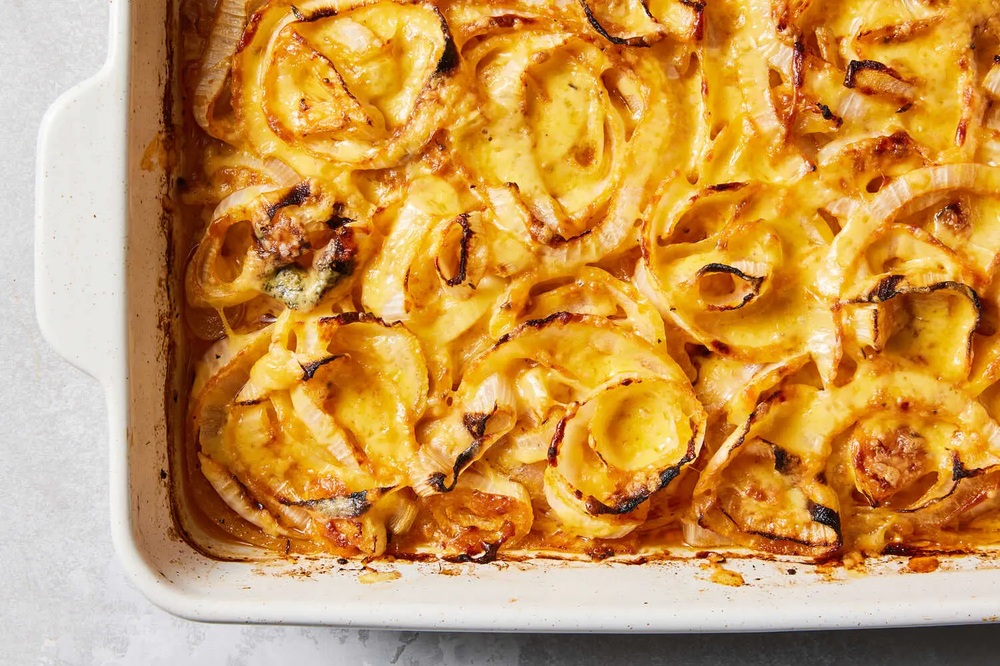

Tennessee Onions

Fig.1 Delicious tennessee onions recipe
Ingredients
- Sweet onions
- Cajun seasoning
- Garlic poweder
- Butter
- Cheese
- Oregano
Steps
-
Arrange 1/2 of the onions on the bottom of a 9x13-inch casserole dish.
Sprinkle with half the Cajun seasoning and half the garlic powder.
Repeat with remaining onions, seasoning, and garlic powder.
-
Arrange butter on top of the onions and top evenly with Cheddar and
mozzarella cheese. Sprinkle oregano over cheese and top with Parmesan
cheese.
-
Bake in the preheated oven until onions are tender and cheese is melted,
bubbly, and golden brown around the edges, about 35 minutes.
- Enjoy!
Home